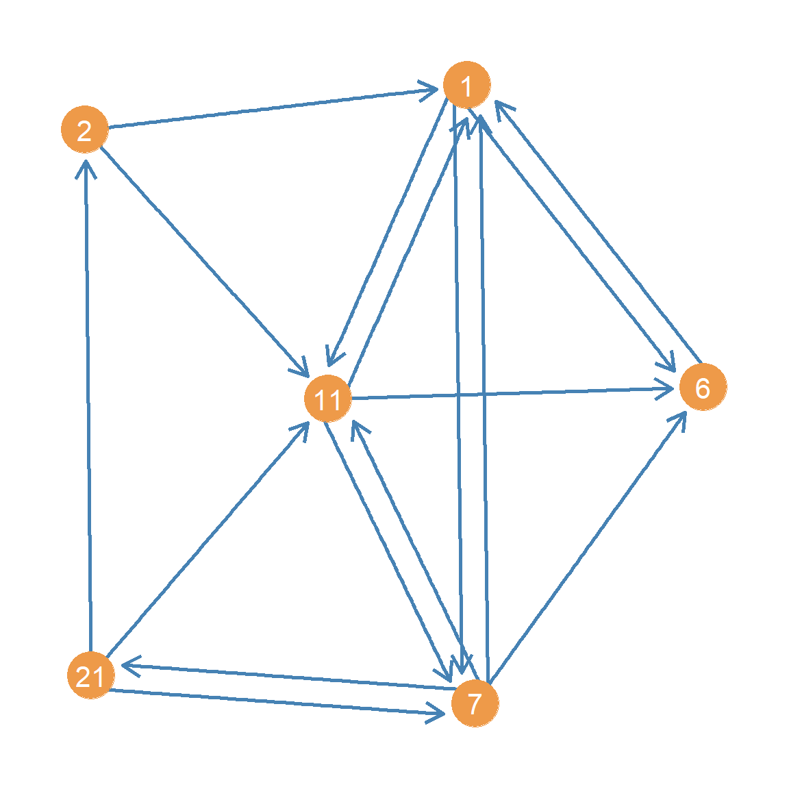
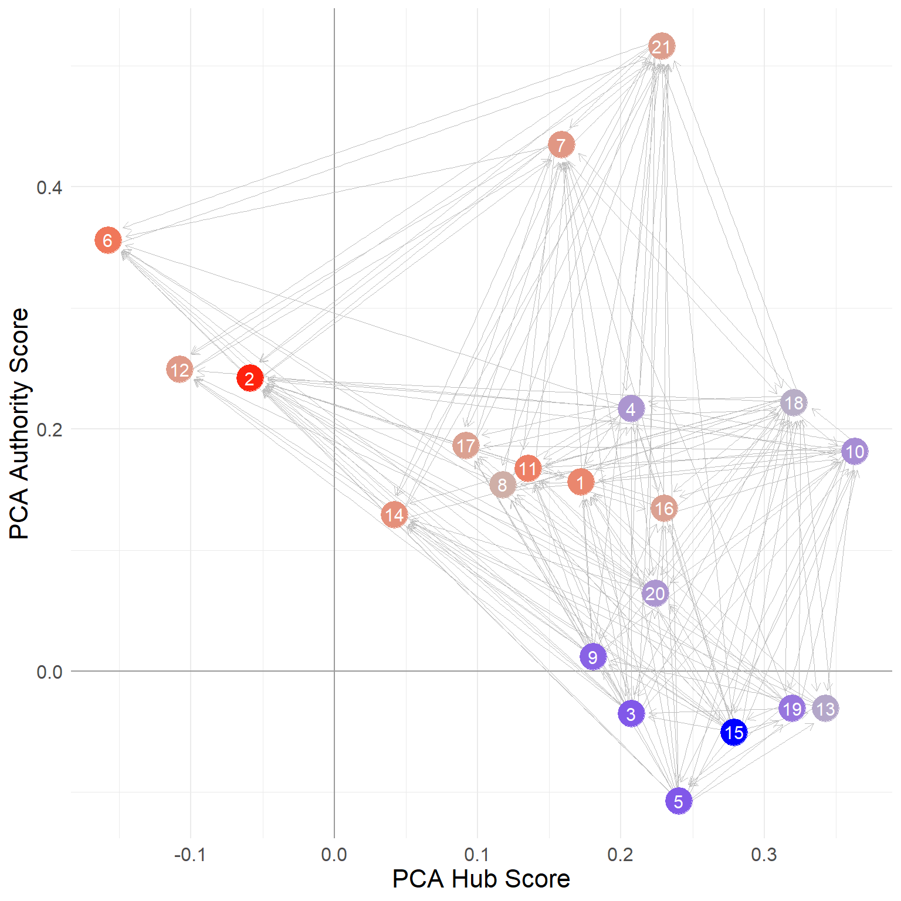
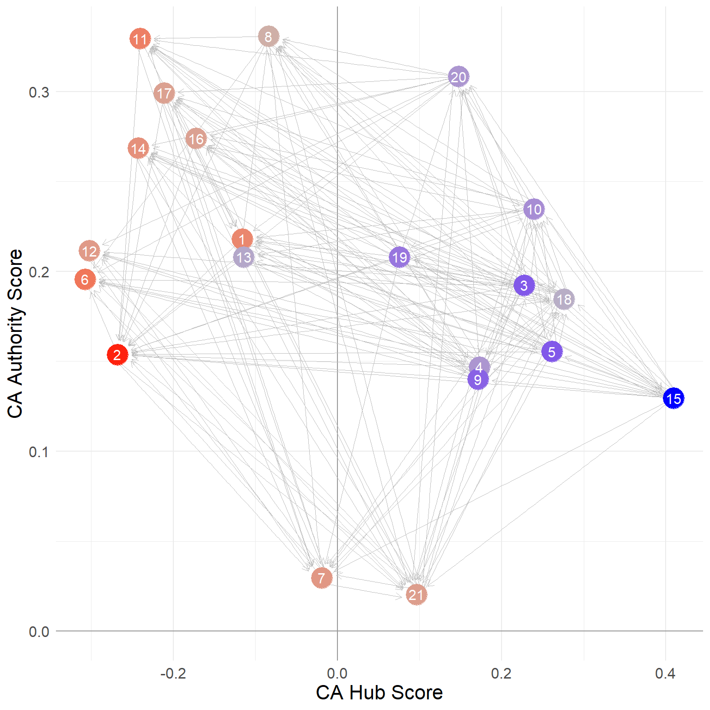

Recall from previous discussions that everything doubles (sometimes quadruples like degree correlations) in directed graphs. The same goes for status as reflected in a distributive model through the network.
Consider two ways of showing your status in a system governed by directed relations (like advice). You can be highly sought after by others (be an “authority”), or you can be discerning in who you seek advice from, preferably seeking out people who are also sought after (e.g., be a “hub” pointing to high-quality others).
These two forms of status are mutually defining (Bonacich and Lloyd 2001). The top authorities are those who are sought after by the top hubs, and the top hubs are the ones who seek the top authorities!
So this leads to a doubling of the Bonacich prestige status accounting equation:
\[
x^h_i = \sum_j a_{ij} x^a_j
\]
\[
x^a_i = \sum_i a_{ij} x^h_i
\]
Which says that the hub score \(x^h\) of a node is the sum of the authority scores \(x^a\) of the nodes they point to (sum over \(j\); the outdegree), and the authority score of a node is the sum of the hub scores of the nodes that point to it (sum over \(i\); the indegree).
So we need to make our status game a bit more complicated (but not too much) to account for this duality:
Code
status2 <-function(w) { a <-rep(1/nrow(w), nrow(w)) # initializing authority scores d <-1# initializing delta k <-0# initializing counterwhile (d >=1e-10) { o.a <- a # old authority scores h <- w %*% o.a # new hub scores a function of previous authority scores of their out-neighbors h <- h /norm(h, type ="E") a <-t(w) %*% h # new authority scores a function of current hub scores of their in-neighbors a <- a /norm(a, type ="E") d <-abs(sum(abs(o.a) -abs(a))) # delta between old and new authority scores k <- k +1 }return(list(h =as.vector(h), a =as.vector(a), k = k))}
Everything is like our previousstatus1 function except now we are keeping track of two mutually defining scores a and h. We first initialize the authority scores by setting them to the value of \(1/n\) (where \(n\) is the number of nodes or the number of rows in the adjacency matrix) in line 2. We then initialize the \(\delta\) difference and \(k\) counter in lines 3-4. The while loop in lines 5-13 then updates the hub scores (to be the sum of the authority scores of each out-neighbor) in line 7 normalize them in line 8 and update the new authority scores to be the sum (across each in-neighbor) of these new hub scores, which are then themselves normalized in line 10.
So at each step \(t\), the authority and hub scores are calculated like this:
\[
x^h_i(t) = \sum_j a_{ij} x^a_j(t-1)
\]
\[
x^a_i(t) = \sum_j a^T_{ij} x^h_j(t)
\]
Where \(a^T_{ij}\) is the corresponding entry in the transpose of the adjacency matrix (t(w) in line 9 of the above function).
As you may have guessed this is just an implementation of the “HITS” algorithm developed by Kleinberg (1999).1
The results for the Krackhardt advice network are:
Note that the just like the status2 function, the igraph function hits_scores returns the two sets of scores as elements of a list, so we need to access them using the $ operator on the object that we store the results in (in this case ha). We also set the scale argument to TRUE so that the scores are normalized by the maximum.
1 Hubs, Authorities and Eigenvectors
Recall that both the eigenvector and PageRank status scores computed via the network status distribution game routine ended up being equivalent to the leading eigenvector of a network proximity matrix (the adjacency matrix \(\mathbf{A}\) and the probability matrix \(\mathbf{P}\) respectively). It would be surprising if the same wasn’t true of the hub and authority status scores.
Let’s find out which ones!
Consider the matrices:
\[
\mathbf{M}^h = \mathbf{A}\mathbf{A}^T
\]
\[
\mathbf{M}^a = \mathbf{A}^T\mathbf{A}
\]
Let’s see what they look like in the Krackhardt manager’s network:
What’s in these matrices? Well let’s look at \(\mathbf{M}^h\). The diagonals will look familiar because they happen to be the outdegree of each node:
Code
degree(g, mode ="out")[1:10]
[1] 6 3 15 12 15 1 8 8 13 14
You may have guessed that the diagonals of matrix \(\mathbf{M}^a\) contain the indegrees:
Code
degree(g, mode ="in")[1:10]
[1] 13 18 5 8 5 10 13 10 4 9
Which means that the off-diagonals cells of each matrix \(m^h_{ij}\) and \(m^a_{ij}\) when \(i \neq j\), contain the common out-neighbors and common in-neighbors shared by nodes \(i\) and \(j\) in the graph, respectively.

Figure 1: Subgraph from Krackhardt’s Managers Network.
In information science, \(\mathbf{M}^h\) and \(\mathbf{M}^a\) matrices have special interpretations. Consider the subgraph shown in , which contains nodes 2 and 11 from the Krackhardt advice network and their respective neighbors:
If these nodes where papers, then we would say that both 2 and 11 point to a common third node 1. In an information network, the papers that other papers point to are their common references. Therefore the number of common out-neighbors of two nodes is is called the bibliographic coupling score between the two papers. In the same way, we can see that 2 and 11 are pointed to by a common third neighbor 21. The number of common in-neighbors between two-papers is called their co-citation score.
Both the bibliographic coupling and the co-citation scores get at two ways that nodes can be similar in a directed graph. In the social context of advice seeking, for instance, two people can be similar if they seek advice from the same others, or two people can be similar if they are sought after for advice by the same others.
The \(\mathbf{M}^h\) and \(\mathbf{M}^a\) matrices, therefore are two (unweighted) similarity matrices between the nodes in a directed graph. As you may also be suspecting, the hub and authorities scores are the leading eigenvectors of the \(\mathbf{M}^h\) and \(\mathbf{M}^a\) matrices (Kleinberg 1999):
Code
a <-eigen(M.a)$vector[, 1] *-1h <-eigen(M.h)$vector[, 1] *-1round(a /max(a), 3)
Given the connection to the HITS dual status ranking, sometimes the \(\mathbf{M}^h\) is called the hub matrix and the \(\mathbf{M}^a\) is called the authority matrix(Ding et al. 2002).
Note that this also means we could have obtained the hub and authority scores using our old status1 function, but we would have had to play the game twice, once for the matrix \(\mathbf{M}^a\) and the other one for the matrix \(\mathbf{M}^h\):
Code
status1 <-function(w) { x <-rep(1, nrow(w)) # initial status vector set to all ones of length equal to the number of nodes d <-1# initial delta k <-0# initializing counterwhile (d >1e-10) { o.x <- x # old status scores x <- w %*% o.x # new scores a function of old scores and adjacency matrix x <- x /norm(x, type ="E") # normalizing new status scores d <-abs(sum(abs(x) -abs(o.x))) # delta between new and old scores k <- k +1# incrementing while counter }return(as.vector(x))}a <-status1(M.a)round(a /max(a), 3)
This link once again demonstrates the equivalence between the eigenvectors of the hub and authority matrices, as similarity matrices between nodes in the network, and our prismatic status distribution game!
2 Combining PageRank and HITS: SALSA
Lempel and Moran (2001) show that we can combine the logic of PageRank and HITS. Their basic idea is to use the same mutually reinforcing approach as in HITS but with degree-normalized (stochastic) versions of the adjacency matrix (like in PageRank).2
Let’s see how it works.
Recall that PageRank works on the \(\mathbf{P}\) matrix, which is defined like this:
This matrix is row-stochastic, because each row is divided by the row total (the outdegrees of each node), meaning its rows sum to one, like we saw before:
Code
rowSums(P.a)
[1] 1 1 1 1 1 1 1 1 1 1 1 1 1 1 1 1 1 1 1 1 1
It is also possible to compute the indegree normalized version of the \(\mathbf{P}\) matrix, defined like this:
Where \(\mathbf{D}_{in}^{-1}\) is a matrix containing the inverse of the indegrees along the diagonals (and zeroes elsewhere) and \(\mathbf{A}^T\) is the transpose of the adjacency matrix. Each non-zero entry of is thus equal to one divided by that row node’s indegree.
In R we compute it like this:
Code
D.i <-diag(1/colSums(A))P.h <- D.i %*%t(A)
Like the \(\mathbf{P}_{a}\) matrix, the \(\mathbf{P}_{a}\) matrix is row-stochastic, meaning its rows sum to 1.0:
Code
rowSums(P.h)
[1] 1 1 1 1 1 1 1 1 1 1 1 1 1 1 1 1 1 1 1 1 1
To get the SALSA version of the hub and authority scores, we can just play our status game over newly defined versions of the hub and authority matrices (Langville and Meyer 2005, 156).
The SALSA hub matrix is defined like this:
\[
\mathbf{Q}_h = \mathbf{P}_a\mathbf{P}_h
\]
And the SALSA authority matrix like this:
\[
\mathbf{Q}_a = \mathbf{P}_h\mathbf{P}_a
\]
Which in R looks like:
Code
Q.h <- P.a %*% P.hQ.a <- P.h %*% P.a
Each of these matrices are row stochastic:
Code
rowSums(Q.h)
[1] 1 1 1 1 1 1 1 1 1 1 1 1 1 1 1 1 1 1 1 1 1
Code
rowSums(Q.a)
[1] 1 1 1 1 1 1 1 1 1 1 1 1 1 1 1 1 1 1 1 1 1
Which means that inequalities will be defined according to differences in the in-degrees of each node just like PageRank.
And now to obtain our SALSA hub and authority scores, we simply play our status1 game on (the transpose of) these matrices, just like we did for PageRank:
What are these numbers? Well, it turns out that they are equivalent to the out and indegrees of each node, divided by the total number of edges in the network (Fouss et al. 2004, 451).
So the SALSA hub and authority scores can also be obtained like this, without having to play our status game over any matrix:
Note that for the SALSA scores we use a different normalization compared to before. Instead of dividing by the maximum, we divide by the sum, so that the vector of SALSA hub and authority scores sum to 1.0.
The reason for this is that, as Fouss et al. (2004) explain, these numbers have a straightforward interpretation in terms of the probability that a random walker in the network will find itself in that particular node, when the walker goes from hub -> authority -> hub -> authority (e.g., never going from hub to hub or authority to authority) using the entries in the P.a and P.h matrices to determine the probability of jumping from hub \(i\) to authority \(j\) and vice versa. Thus, the higher the probability the more “central” the specific hub or authority is, just like the random walk interpretation of the PageRank scores.
3 HITS as Principal Components Analysis
Saerens and Fouss (2005) argue that there is an intimate relationship between the HITS dual ranking scores and one of the most widely used multivariate analysis techniques, Principal Components Analysis (PCA). In fact, they argue that HITS is just PCA on an uncentered data matrix (which in the this case is the network’s adjacency matrix). Technically we could also just argue that PCA is just HITS on a centered adjacency matrix, as we will see right now.
Let’s see how this works. First, let’s create a centered version of the network adjacency matrix. To center a typical data matrix (e.g., of individuals in the rows by variables in the columns) we subtract the column mean (the average score of all individuals on that variable) from each individual’s score.3
To do our centering, we can use the native R function apply with the second argument set to 2 which means “apply this function to the columns of the matrix” (setting the argument to 1 would apply it to the rows):
Code
A.c <-apply(A, 2, function(x) { x -mean(x)})
As you can see, the function we apply to each column of the adjacency matrix A just takes each column vector and subtracts the mean from each of the entries of the same vector (x - mean(x)).
We can use the colMeans function to check that the column means of the centered adjacency matrix are indeed zero:
Code
round(colMeans(A.c))
[1] 0 0 0 0 0 0 0 0 0 0 0 0 0 0 0 0 0 0 0 0 0
Now that we have our column-centered the adjacency matrix, all we need to do is play our HITS status game on it:
We then use the function below to normalize each status score to be within the minus one to plus one interval and have mean zero:
Code
norm.v <-function(x) { x <- x -min(x) x <- x /max(x) x <- x -mean(x)return(x)}
The first thing the function does (line 2) is subtract the minimum value from the vector (which becomes zero), in line 3 we divided by the maximum (which becomes one), and in line 4 we subtract the mean from each value.
And the resulting normalized hub and authority scores for each node in the Krackhardt managers advice network are:
Saerens and Fouss (2005) show that these are the same scores we would obtain from a simple PCA of the regular old adjacency matrix. To see this, we can do a simple PCA of the adjacency matrix, recalling that in the standard multivariate analysis context, PCA is the eigenvector decomposition of the covariance matrix between variables in the usual rectangular cases by variables dataset.
In the case of the adjacency matrix, we proceed in the same way. First, we need to compute the covariance matrix of the columns of the adjacency matrix (e.g., the covariance between the indegrees of each pair of nodes). We can use the native R function cov for this purpose:
Recall that the covariance between two vectors \(x\) and \(y\) is just the sum of the values in the vector composed by multiplying the first vector (minus its mean) from the second vector (minus its mean) divided by the length of the vector minus one.
In the network adjacency matrix case, the vectors in questions are the columns of the adjacency matrix for each individual, recording each of the incoming ties to that person. So if \(\mathbf{a}_i\) is the column vector recording the in-neighbors of \(i\) and \(\mathbf{a}_j\) is the column vector recording the in-neighbors of \(j\), the covariance between nodes \(i\) and \(j\) is given by:
Where \(\mathbf{\bar{a}_i}\) indicates the mean of the entries in vector \(\mathbf{a_i}\).
In R, the entry for the covariance between persons 1 and 2 in the Krackchardt manager’s network can be obtained like this:
Code
i <- A[, 1] # vector for person 1j <- A[, 2] # vector for person 2cov.ij <-sum((i -mean(i)) * (j -mean(j)) * (1/ (length(i) -1)))round(cov.ij, 3)
[1] 0.093
Which is the same number we see in cells \(c_{1,2}\) and \(c_{2, 1}\) of the covariance matrix above.
Now that we have the covariance matrix C, all we need to do is extract the leading eigenvector of this matrix. We can do that by playing our usual status game on it!
Code
cov.a <-status1(C)
These scores should be equivalent to the normalized authority scores we computed earlier (becuse they are based on the indegree). Now to compute the hub scores from the PCA analysis, all we need to do is add up the authority score of each node that a given node points to. We can do this by post-multyplying the adjacency matrix times the PCA score vector:
Which are indeed the same scores we obtained earlier when we played the HITS status game on the centered adjacency matrix!
Of course, we could have also obtained the same scores by using one of the standard canned functions for obtaining the PCA scores for the rows (individuals) and columns (variables) of a standard data matrix, like the PCA function in the package FactoMineR.4
The difference is that rather than a cases by variables matrix, we just feed it the usual adjacency matrix:
The PCA function returns results in a list object that we called pca.res. One matrix in that list contains the hub (row) scores (“individual coordinates” in FactoMineR lingo) stored in the pca.res$ind$coord object and the other contains the authority (column) scores for the same nodes (“variable coordinates” in FactoMineR lingo) stored in the pca.res$var$coord object. We set the argument scale.unit to FALSE so that the columns of the matrix are not transformed to have unit variance (the usual transformation for standard variables).
We can see that these scores are the same we estimated earlier:
We will see one way to interpret these PCA scores below.
4 HITS and SALSA versus Correspondence Analysis
Fouss et al. (2004) also argue that there is a close link between a method to analyze two-way tables called correspondence analysis, and both Lempel and Moran’s SALSA and Kleinberg’s HITS algorithms.
They first ask: What if we play our status distribution game not on the transpose of the SALSA hub and authority matrices like we just did but just on the regular matrices without transposition?
OK, so that’s weird. All that we get is a vector with the same number repeated twenty one times (in this case, the number of nodes in the graph). What’s going on?
Recall from the previous that the status game computes the leading eigenvector of the matrix we play the game on, and spits that vector out as our status scores for that matrix. The leading eigenvector is that associated with the largest eigenvalue (if the matrix contains one).
So all that this is telling us is that the first eigenvector of the un-transposed versions of the SALSA hub and authority matrices is pretty useless because it assigns everyone the same status score.
But Fouss et al. (2004) note, like we did at the beginning, that a matrix has many eigenvector/eigenvalue pairs and that perhaps the second leading eigenvector is not that useless; this is the eigenvector associated with the second largest eigenvalue.
How do we get that vector? Well, as always, there is a mathematical workaround. The trick is to create a new matrix that removes the influence of that first (useless) eigenvector and then play our status game on that matrix.
To do that, let’s create a matrix that is equal to the original useless eigenvector times its own transpose. In R this goes like this:
Code
v1 <-status1(Q.h)D <- v1 %*%t(v1)
What’s in this matrix? Let’s see the first ten rows and columns:
Now, these scores don’t seem useless. They are different across each node; and like the PCA scores we obtained earlier, some are positive and some are negative.
Fouss et al. (2004) show that these are the same scores you would obtain from a Correspondence Analysis (CA) of the original adjacency matrix.
Let’s see if that is true in our case. We can use the CA function in the package FactoMineR5 to compute the Correspondence Analysis scores for any matrix in R, including a network adjacency matrix:
In line 2 we store the CA results in the objectca.res. We then grab the CA scores associated with the rows of the adjacency matrix and put them in the object ca.h in line 3 and the scores associated with the columns of the adjacency matrix and put them in the object ca.a inline 4.
Which shows that indeed the CA scores are the same ones as we obtain from playing our status game on the corrected versions of the un-transposed SALSA hub and authorities matrices!
But what are the CA (and PCA) scores supposed to capture? Let’s look at them side-by-side next to the SALSA hub and authority scores, as shown in Table 1 which has nodes rank ordered by their SALSA hub score.
Table 1: Hubs and Authorties Scores for Krackhardt’s managers advice network
salsa.h
salsa.a
pca.hub
pca.auth
ca.hub
ca.auth
15
0.416
0.088
0.410
0.130
0.279
0.050
18
0.353
0.331
0.276
0.185
0.321
-0.222
3
0.312
0.110
0.228
0.192
0.207
0.035
5
0.312
0.110
0.261
0.155
0.240
0.107
10
0.291
0.199
0.239
0.235
0.363
-0.182
9
0.270
0.088
0.171
0.140
0.181
-0.012
4
0.249
0.177
0.173
0.147
0.207
-0.217
20
0.249
0.177
0.148
0.308
0.224
-0.065
19
0.229
0.088
0.076
0.208
0.319
0.031
21
0.229
0.331
0.096
0.020
0.228
-0.516
7
0.166
0.287
-0.019
0.030
0.159
-0.435
8
0.166
0.221
-0.084
0.331
0.117
-0.154
1
0.125
0.287
-0.116
0.218
0.172
-0.156
13
0.125
0.088
-0.114
0.208
0.342
0.031
17
0.104
0.199
-0.211
0.299
0.092
-0.186
14
0.083
0.221
-0.243
0.269
0.042
-0.130
16
0.083
0.177
-0.172
0.274
0.230
-0.135
2
0.062
0.398
-0.268
0.154
-0.059
-0.242
11
0.062
0.243
-0.241
0.329
0.135
-0.168
12
0.042
0.155
-0.302
0.211
-0.108
-0.249
6
0.021
0.221
-0.307
0.196
-0.158
-0.356
Using information in Table 1, shows a point and line network plot but using the CA hub and authority scores to embed the nodes in a common two-dimensional space. In the plot nodes are colored by the difference between their SALSA hub and authority scores such that nodes with positive scores (hub score larger than their authority scores) appear in blue and nodes with negative scores (authority scores larger than their hub scores) appear in red.

(a) CA Coordinates

(b) PCA Coordinates
Figure 2: Krackhardt’s managers advice network (top hubs in blue and top authorities in red)
We can see that the CA hub score places the “hubbiest” of hubs (blue nodes) in the lower-right quadrant of the diagram, with positive CA hub scores and negative CA authority scores (this last multiplied by minus one from the ones shown above). Note from Table 1, that the nodes in this region (e.g. {15, 5, 3, 19, 9, 13}) all have large SALSA hub scores and very low SALSA authority scores.
In the same way, the most authoritative of authorities (red nodes) appear in the upper-left side, with negative CA hub scores and positive CA authority scores. Note that nodes in this region have very large SALSA authority scores and very low SALSA hub scores.
Finally, note that nodes in the upper-right quadrant of the diagram (e.g. {21, 7, 4, 18, 10}) are “ambidextrous” nodes, showcasing relatively large scores as both hubs and authorities according to SALSA.
Thus what the CA scores seem to be doing is separating out the purest examples of hubs and authorities in the network from those who play both roles.
Note that as shown in , we get an even stronger separation between hubs and authorities when using the PCA scores to place nodes in a common space, with all the authorities (except nodes 7 and 21) to the upper left, and the hubs on the right-hand side of the plot. So the PCA scores reflect the same distinction between hub and authority status as the CA scores.
5 A Hybrid PageRank/HITS Approach
Borodin et al. (2005) argue that perhaps a better approach to combining PageRank and HITS is to normalize only one of the scores by degree while leaving the other score alone.
5.1 Picky Hubs
For instance, in some settings, it might make more sense to assign more authority to nodes that are pointed to by picky hubs (e.g., people who seek advice from a few select others), and discount the authority scores of nodes that are pointed to by indiscriminate hubs (people who seek advice from everyone).
We can do this by changing the way we compute the hub score of each node. Instead of just summing the authority scores of all the nodes they point to (like in regular HITS) we instead take the average of the authority scores of all nodes they point to. We then feed this average back to the authority score calculation.
This entails slightly modifying the HITS status game as follows:
Code
status3 <-function(w) { a <-rep(1, nrow(w)) # initializing authority scores d.o <-rowSums(w) # outdegree of each node d <-1# initializing delta k <-0# initializing counterwhile (d >=1e-10) { o.a <- a # old authority scores h <- (w %*% o.a) *1/ d.o # new hub scores a function of previous authority scores of their out-neighbors h <- h /norm(h, type ="E") a <-t(w) %*% h # new authority scores a function of current hub scores of their in-neighbors a <- a /norm(a, type ="E") d <-abs(sum(abs(o.a) -abs(a))) # delta between old and new authority scores k <- k +1 }return(list(h =as.vector(h), a =as.vector(a), k = k))}
Note that the only modification is the addition of the multiplication by the inverse of the outdegrees in line 8, which divides the standard HITS hub score by the outdegree of each hub.
This is an implementation of the “HubAvg” algorithm described by Borodin et al. (2005, 238–39).
5.2 Exclusive Authorities
In the same way, depending on the application, it might make more sense to assign a larger hub score to hubs that point to exclusive authorities (authorities that are sought after by a few select others) and discount the “hubness” of hubs that point to popular authorities (those who are sought after by everyone).
We can implement this approach—let’s call it the “AuthAvg” algorithm—with a slight modification of the status2 function similar to the one we used to create status3:
Code
status4 <-function(w) { a <-rep(1, nrow(w)) # initializing authority scores d.i <-colSums(w) # indegree of each node d <-1# initializing delta k <-0# initializing counterwhile (d >=1e-10) { o.a <- a # old authority scores h <- w %*% o.a # new hub scores a function of previous authority scores of their out-neighbors h <- h /norm(h, type ="E") a <- (t(w) %*% h) *1/ d.i # new authority scores a function of current hub scores of their in-neighbors a <- a /norm(a, type ="E") d <-abs(sum(abs(o.a) -abs(a))) # delta between old and new authority scores k <- k +1 }return(list(h =as.vector(h), a =as.vector(a), k = k))}
And the resulting hubs and authorities scores are:
Bonacich, Phillip, and Paulette Lloyd. 2001. “Eigenvector-Like Measures of Centrality for Asymmetric Relations.”Social Networks 23 (3): 191–201.
Borodin, Allan, Gareth O Roberts, Jeffrey S Rosenthal, and Panayiotis Tsaparas. 2005. “Link Analysis Ranking: Algorithms, Theory, and Experiments.”ACM Transactions on Internet Technology (TOIT) 5 (1): 231–97.
Ding, Chris, Xiaofeng He, Parry Husbands, Hongyuan Zha, and Horst Simon. 2002. PageRank, HITS and a Unified Framework for Link Analysis. Lawrence Berkeley National Laboratory, University of California, Berkeley.
Fouss, François, Jean-Michel Renders, and Marco Saerens. 2004. “Some Relationships Between Kleinberg’s Hubs and Authorities, Correspondence Analysis, and the Salsa Algorithm.”International Conference on the Statistical Analysis of Textual Data (JADT 2004).
Kleinberg, Jon M. 1999. “Authoritative Sources in a Hyperlinked Environment.”Journal of the ACM (JACM) 46 (5): 604–32.
Langville, Amy N, and Carl D Meyer. 2005. “A Survey of Eigenvector Methods for Web Information Retrieval.”SIAM Review 47 (1): 135–61.
Lempel, Ronny, and Shlomo Moran. 2001. “SALSA: The Stochastic Approach for Link-Structure Analysis.”ACM Transactions on Information Systems (TOIS) 19 (2): 131–60.
Saerens, Marco, and Francois Fouss. 2005. “HITS Is Principal Components Analysis.”The 2005 IEEE/WIC/ACM International Conference on Web Intelligence (WI’05), 782–85.
Footnotes
HITS is an acronym for the unfortunate and impossible to remember name “Hypertext Induced Topic Selection” reflecting the origins the approach in web-based information science.↩︎
Lempel and Moran (2001) call this method the “Stochastic Approach for Link Structure Analysis” or SALSA (an actually clever and memorable acronym!).↩︎
Note that the column mean of the adjacency matrix will be equivalent to each individual’s indegree (the sum of the columns) divided by the total number of nodes in the network (\(k^{in}/n\)), which is kind of a normalized degree centrality score, except the usual normalization is to divide by \(n-1\) (so as to have a maximum of 1.0) as we saw in our discussion of degree centrality.↩︎
---title: "Hubs and Authorities"---Recall from [previous discussions](basic.qmd) that everything doubles (sometimes quadruples like degree correlations) in directed graphs. The same goes for status as reflected in a distributive model through the network. Consider two ways of showing your status in a system governed by directed relations (like advice). You can be highly sought after by others (be an "authority"), or you can be discerning in who you seek advice from, preferably seeking out people who are also sought after (e.g., be a "hub" pointing to high-quality others). These two forms of status are mutually defining [@bonacich_lloyd01]. The top authorities are those who are sought after by the top hubs, and the top hubs are the ones who seek the top authorities! So this leads to a doubling of the Bonacich prestige status accounting equation:$$ x^h_i = \sum_j a_{ij} x^a_j$$$$ x^a_i = \sum_i a_{ij} x^h_i$$Which says that the hub score $x^h$ of a node is the sum of the authority scores $x^a$ of the nodes they point to (sum over $j$; the outdegree), and the authority score of a node is the sum of the hub scores of the nodes that point to it (sum over $i$; the indegree). So we need to make our [status game](prest-eigen.qmd) a bit more complicated (but not too much) to account for this duality:```{r}status2 <-function(w) { a <-rep(1/nrow(w), nrow(w)) # initializing authority scores d <-1# initializing delta k <-0# initializing counterwhile (d >=1e-10) { o.a <- a # old authority scores h <- w %*% o.a # new hub scores a function of previous authority scores of their out-neighbors h <- h /norm(h, type ="E") a <-t(w) %*% h # new authority scores a function of current hub scores of their in-neighbors a <- a /norm(a, type ="E") d <-abs(sum(abs(o.a) -abs(a))) # delta between old and new authority scores k <- k +1 }return(list(h =as.vector(h), a =as.vector(a), k = k))}```Everything is like [our previous](prest-eigen.qmd)`status1` function except now we are keeping track of two mutually defining scores `a` and `h`. We first initialize the authority scores by setting them to the value of $1/n$ (where $n$ is the number of nodes or the number of rows in the adjacency matrix) in line 2. We then initialize the $\delta$ difference and $k$ counter in lines 3-4. The `while` loop in lines 5-13 then updates the hub scores (to be the sum of the authority scores of each out-neighbor) in line 7 normalize them in line 8 and update the new authority scores to be the sum (across each in-neighbor) of these new hub scores, which are then themselves normalized in line 10. So at each step $t$, the authority and hub scores are calculated like this:$$ x^h_i(t) = \sum_j a_{ij} x^a_j(t-1)$$$$ x^a_i(t) = \sum_j a^T_{ij} x^h_j(t)$$Where $a^T_{ij}$ is the corresponding entry in the *transpose* of the adjacency matrix (`t(w)` in line 9 of the above function).As you may have guessed this is just an implementation of the "HITS" algorithm developed by @kleinberg99.^[HITS is an acronym for the unfortunate and impossible to remember name "Hypertext Induced Topic Selection" reflecting the origins the approach in web-based information science.]The results for the Krackhardt advice network are:```{r}library(networkdata)library(igraph)g <- ht_adviceA <-as.matrix(as_adjacency_matrix(g))hits.res1 <-status2(A)round(hits.res1$a /max(hits.res1$a), 3)round(hits.res1$h /max(hits.res1$h), 3)```Which are equivalent to using the `igraph` function `hits_scores`:```{r}ha <-hits_scores(g, scale =TRUE)round(ha$authority, 3)round(ha$hub, 3)```Note that the just like the `status2` function, the `igraph` function `hits_scores` returns the two sets of scores as elements of a `list`, so we need to access them using the `$` operator on the object that we store the results in (in this case `ha`). We also set the `scale` argument to `TRUE` so that the scores are normalized by the maximum. ## Hubs, Authorities and EigenvectorsRecall that both the [eigenvector](prest-eigen.qmd) and [PageRank](prest-pagerank.qmd) status scores computed via the network status distribution game routine ended up being equivalent to the leading eigenvector of a network proximity matrix (the adjacency matrix $\mathbf{A}$ and the probability matrix $\mathbf{P}$ respectively). It would be surprising if the same wasn't true of the hub and authority status scores.Let's find out which ones!Consider the matrices:$$\mathbf{M}^h = \mathbf{A}\mathbf{A}^T$$$$\mathbf{M}^a = \mathbf{A}^T\mathbf{A}$$Let's see what they look like in the Krackhardt manager's network:```{r}M.h <- A %*%t(A)M.a <-t(A) %*% AM.h[1:10, 1:10]M.a[1:10, 1:10]```What's in these matrices? Well let's look at $\mathbf{M}^h$. The diagonals will look familiar because they happen to be the **outdegree** of each node:```{r}degree(g, mode ="out")[1:10]```You may have guessed that the diagonals of matrix $\mathbf{M}^a$ contain the **indegrees**:```{r}degree(g, mode ="in")[1:10]```Which means that the *off-diagonals* cells of each matrix $m^h_{ij}$ and $m^a_{ij}$ when $i \neq j$, contain the **common out-neighbors** and **common in-neighbors** shared by nodes $i$ and $j$ in the graph, respectively.```{r}#| echo: false#| label: fig-sub#| fig-cap: "Subgraph from Krackhardt's Managers Network."#| fig-height: 6#| fig-width: 6nodes <-unique(c(2, 11, neighbors(g, 2), neighbors(g, 11)))g.sub <-subgraph(g, nodes)V(g.sub)$name <- nodesset.seed(456)library(ggraph)p <-ggraph(g.sub, layout ="auto")p <- p +geom_edge_parallel(color ="steelblue", edge_width =1,arrow =arrow(length =unit(4, "mm")),end_cap =circle(6, "mm"),sep =unit(5, "mm"))p <- p +geom_node_point(aes(x = x, y = y), size =12, color ="tan2")p <- p +geom_node_text(aes(label = name), size =5.5, color ="white")p <- p +theme_graph()p```In information science, $\mathbf{M}^h$ and $\mathbf{M}^a$ matrices have special interpretations. Consider the subgraph shown in , which contains nodes 2 and 11 from the Krackhardt advice network and their respective neighbors: If these nodes where papers, then we would say that both 2 and 11 point to a common third node 1. In an information network, the papers that other papers point to are their common references. Therefore the number of *common out-neighbors* of two nodes is is called the **bibliographic coupling** score between the two papers. In the same way, we can see that 2 and 11 are pointed to by a common third neighbor 21. The number of *common in-neighbors* between two-papers is called their **co-citation** score.Both the bibliographic coupling and the co-citation scores get at two ways that nodes can be similar in a directed graph. In the social context of advice seeking, for instance, two people can be similar if they seek advice from the same others, or two people can be similar if they are sought after for advice by the same others. The $\mathbf{M}^h$ and $\mathbf{M}^a$ matrices, therefore are two (unweighted) similarity matrices between the nodes in a directed graph. As you may also be suspecting, the hub and authorities scores are the leading eigenvectors of the $\mathbf{M}^h$ and $\mathbf{M}^a$ matrices [@kleinberg99]:```{r}a <-eigen(M.a)$vector[, 1] *-1h <-eigen(M.h)$vector[, 1] *-1round(a /max(a), 3)round(h /max(h), 3)```Given the connection to the HITS dual status ranking, sometimes the $\mathbf{M}^h$ is called the **hub matrix** and the $\mathbf{M}^a$ is called the **authority matrix** [@ding_etal02]. Note that this also means we could have obtained the hub and authority scores using our old `status1` function, but we would have had to play the game twice, once for the matrix $\mathbf{M}^a$ and the other one for the matrix $\mathbf{M}^h$:```{r}status1 <-function(w) { x <-rep(1, nrow(w)) # initial status vector set to all ones of length equal to the number of nodes d <-1# initial delta k <-0# initializing counterwhile (d >1e-10) { o.x <- x # old status scores x <- w %*% o.x # new scores a function of old scores and adjacency matrix x <- x /norm(x, type ="E") # normalizing new status scores d <-abs(sum(abs(x) -abs(o.x))) # delta between new and old scores k <- k +1# incrementing while counter }return(as.vector(x))}a <-status1(M.a)round(a /max(a), 3)h <-status1(M.h)round(h /max(h), 3)```This link once again demonstrates the equivalence between the eigenvectors of the hub and authority matrices, as similarity matrices between nodes in the network, and our prismatic status distribution game!## Combining PageRank and HITS: SALSA@lempel_moran01 show that we can combine the logic of PageRank and HITS. Their basic idea is to use the same mutually reinforcing approach as in HITS but with degree-normalized (stochastic) versions of the adjacency matrix (like in PageRank).^[@lempel_moran01 call this method the "Stochastic Approach for Link Structure Analysis" or SALSA (an actually clever and memorable acronym!).]Let's see how it works.Recall that [PageRank](prest-pagerank.qmd) works on the $\mathbf{P}$ matrix, which is defined like this:$$\mathbf{P}_{a} = \mathbf{D}_{out}^{-1}\mathbf{A}$$In `R` we compute it like this:```{r}D.o <-diag(1/rowSums(A))P.a <- D.o %*% A```This matrix is row-stochastic, because each row is divided by the row total (the outdegrees of each node), meaning its rows sum to one, like we saw before:```{r}rowSums(P.a)```It is also possible to compute the **indegree normalized** version of the $\mathbf{P}$ matrix, defined like this:$$\mathbf{P}_{h} = \mathbf{D}_{in}^{-1} \mathbf{A}^T$$Where $\mathbf{D}_{in}^{-1}$ is a matrix containing the inverse of the indegrees along the diagonals (and zeroes elsewhere) and $\mathbf{A}^T$ is the transpose of the adjacency matrix. Each non-zero entry of is thus equal to one divided by that row node's indegree. In `R` we compute it like this:```{r}D.i <-diag(1/colSums(A))P.h <- D.i %*%t(A)```Like the $\mathbf{P}_{a}$ matrix, the $\mathbf{P}_{a}$ matrix is row-stochastic, meaning its rows sum to 1.0:```{r}rowSums(P.h)```To get the SALSA version of the hub and authority scores, we can just play our status game over newly defined versions of the hub and authority matrices [@langville_meyer05, p. 156]. The SALSA hub matrix is defined like this:$$\mathbf{Q}_h = \mathbf{P}_a\mathbf{P}_h$$And the SALSA authority matrix like this:$$\mathbf{Q}_a = \mathbf{P}_h\mathbf{P}_a$$Which in `R` looks like:```{r}Q.h <- P.a %*% P.hQ.a <- P.h %*% P.a```Each of these matrices are row stochastic:```{r}rowSums(Q.h)rowSums(Q.a)```Which means that inequalities will be defined according to differences in the in-degrees of each node just like PageRank.And now to obtain our SALSA hub and authority scores, we simply play our `status1` game on (the transpose of) these matrices, just like we did for PageRank:```{r}salsa.h <-status1(t(Q.h))round(salsa.h /sum(salsa.h), 2)salsa.a <-status1(t(Q.a))round(salsa.a /sum(salsa.a), 2)```What are these numbers? Well, it turns out that they are equivalent to the out and indegrees of each node, divided by the total number of edges in the network [@fouss_etal04, p. 451].So the SALSA hub and authority scores can also be obtained like this, without having to play our status game over any matrix:```{r}round(rowSums(A) /sum(A), 2)round(colSums(A) /sum(A), 2)```Note that for the SALSA scores we use a different normalization compared to before. Instead of dividing by the maximum, we divide by the sum, so that the vector of SALSA hub and authority scores sum to 1.0. The reason for this is that, as @fouss_etal04 explain, these numbers have a straightforward interpretation in terms of the *probability* that a [random walker](prest-pagerank.qmd) in the network will find itself in that particular node, when the walker goes from hub -> authority -> hub -> authority (e.g., never going from hub to hub or authority to authority) using the entries in the `P.a` and `P.h` matrices to determine the probability of jumping from hub $i$ to authority $j$ and vice versa. Thus, the higher the probability the more "central" the specific hub or authority is, just like the random walk interpretation of the PageRank scores.<!--We could, of course, create "Google" versions of these matrices and compute our SALSA version of the hub and authorities scores by incorporating a damping factor, teleportation, and all the rest [@rafiei_mendelzon00]. -->## HITS as Principal Components Analysis@saerens_fouss05 argue that there is an intimate relationship between the HITS dual ranking scores and one of the most widely used multivariate analysis techniques, Principal Components Analysis (PCA). In fact, they argue that HITS is just PCA on an *uncentered data matrix* (which in the this case is the network's adjacency matrix). Technically we could also just argue that PCA is just HITS on a **centered adjacency matrix**, as we will see right now.Let's see how this works. First, let's create a *centered* version of the network adjacency matrix. To center a typical data matrix (e.g., of individuals in the rows by variables in the columns) we subtract the *column mean* (the average score of all individuals on that variable) from each individual's score.^[Note that the column mean of the adjacency matrix will be equivalent to each individual's **indegree** (the sum of the columns) divided by the total number of nodes in the network ($k^{in}/n$), which is kind of a normalized degree centrality score, except the usual normalization is to divide by $n-1$ (so as to have a maximum of 1.0) as we saw in our discussion of [degree centrality](cent-deg.qmd).] To do our centering, we can use the native `R` function `apply` with the second argument set to `2` which means "apply this function to the columns of the matrix" (setting the argument to `1` would apply it to the rows):```{r}A.c <-apply(A, 2, function(x) { x -mean(x)})```As you can see, the function we `apply` to each column of the adjacency matrix `A` just takes each column vector and subtracts the mean from each of the entries of the same vector (`x - mean(x)`).We can use the `colMeans` function to check that the column means of the centered adjacency matrix are indeed zero:```{r}round(colMeans(A.c))```Now that we have our column-centered the adjacency matrix, all we need to do is play our HITS status game on it:```{r}hits.res <-status2(A.c)h2 <- hits.res$ha2 <- hits.res$anames(h2) <-1:21names(a2) <-1:21```We then use the function below to normalize each status score to be within the minus one to plus one interval and have mean zero:```{r}norm.v <-function(x) { x <- x -min(x) x <- x /max(x) x <- x -mean(x)return(x)}```The first thing the function does (line 2) is subtract the minimum value from the vector (which becomes zero), in line 3 we divided by the maximum (which becomes one), and in line 4 we subtract the mean from each value.And the resulting normalized hub and authority scores for each node in the Krackhardt managers advice network are:```{r}round(norm.v(h2), 3)round(norm.v(a2), 3)```@saerens_fouss05 show that these are the same scores we would obtain from a simple PCA of the regular old adjacency matrix. To see this, we can do a simple PCA of the adjacency matrix, recalling that in the standard multivariate analysis context, PCA is the [eigenvector decomposition](prest-eigen.qmd) of the **covariance matrix** between variables in the usual rectangular cases by variables dataset. In the case of the adjacency matrix, we proceed in the same way. First, we need to compute the covariance matrix of the columns of the adjacency matrix (e.g., the covariance between the indegrees of each pair of nodes). We can use the native `R` function `cov` for this purpose:```{r}C <-cov(A)round(C[1:10, 1:10], 3)```Recall that the covariance between two vectors $x$ and $y$ is just the sum of the values in the vector composed by multiplying the first vector (minus its mean) from the second vector (minus its mean) divided by the length of the vector minus one. In the network adjacency matrix case, the vectors in questions are the *columns* of the adjacency matrix for each individual, recording each of the incoming ties to that person. So if $\mathbf{a}_i$ is the column vector recording the in-neighbors of $i$ and $\mathbf{a}_j$ is the column vector recording the in-neighbors of $j$, the covariance between nodes $i$ and $j$ is given by:$$\begin{equation}cov(i,j) = \frac{\sum_{k=1}^N [(\mathbf{a}_i - \mathbf{\bar{a}}_i)(\mathbf{a}_j - \mathbf{\bar{a}}_j)]_k}{N-1}\end{equation}$$Where $\mathbf{\bar{a}_i}$ indicates the mean of the entries in vector $\mathbf{a_i}$.In `R`, the entry for the covariance between persons 1 and 2 in the Krackchardt manager's network can be obtained like this:```{r}i <- A[, 1] # vector for person 1j <- A[, 2] # vector for person 2cov.ij <-sum((i -mean(i)) * (j -mean(j)) * (1/ (length(i) -1)))round(cov.ij, 3)```Which is the same number we see in cells $c_{1,2}$ and $c_{2, 1}$ of the covariance matrix above.Now that we have the covariance matrix `C`, all we need to do is extract the leading eigenvector of this matrix. We can do that by playing our usual status game on it!```{r}cov.a <-status1(C)```These scores should be equivalent to the normalized authority scores we computed earlier (becuse they are based on the indegree). Now to compute the hub scores from the PCA analysis, all we need to do is add up the authority score of each node that a given node points to. We can do this by post-multyplying the adjacency matrix times the PCA score vector:```{r}cov.h <-as.vector(A %*% cov.a)```And now, for the big reveal:```{r}names(cov.h) <-1:21names(cov.a) <-1:21round(norm.v(cov.h), 3)round(norm.v(cov.a), 3)```Which are indeed the same scores we obtained earlier when we played the HITS status game on the centered adjacency matrix!Of course, we could have also obtained the same scores by using one of the standard canned functions for obtaining the PCA scores for the rows (individuals) and columns (variables) of a standard data matrix, like the `PCA` function in the package `FactoMineR`.^[https://cran.r-project.org/web/packages/FactoMineR/]The difference is that rather than a cases by variables matrix, we just feed it the usual adjacency matrix:```{r}library(FactoMineR)pca.res <-PCA(A, graph =FALSE, scale.unit =FALSE)pca.h <- pca.res$ind$coord[, 1]pca.a <- pca.res$var$coord[, 1]names(pca.a) <-1:21```The `PCA` function returns results in a `list` object that we called `pca.res`. One matrix in that list contains the hub (row) scores ("individual coordinates" in `FactoMineR` lingo) stored in the `pca.res$ind$coord` object and the other contains the authority (column) scores for the same nodes ("variable coordinates" in `FactoMineR` lingo) stored in the `pca.res$var$coord` object. We set the argument `scale.unit` to `FALSE` so that the columns of the matrix are *not* transformed to have unit variance (the usual transformation for standard variables).We can see that these scores are the same we estimated earlier:```{r}round(norm.v(pca.h), 3)round(norm.v(pca.a), 3)```We will see one way to interpret these PCA scores below.## HITS and SALSA versus Correspondence Analysis@fouss_etal04 also argue that there is a close link between a method to analyze two-way tables called **correspondence analysis**, and both Lempel and Moran's SALSA and Kleinberg's HITS algorithms. They first ask: What if we play our status distribution game not on the *transpose* of the SALSA hub and authority matrices like we just did but just on the regular matrices without transposition?Here's what happens:```{r}round(status1(Q.h), 3)round(status1(Q.a), 3)```OK, so that's weird. All that we get is a vector with the same number repeated twenty one times (in this case, the number of nodes in the graph). What's going on?Recall from the previous that the [status game](prest-eigen.qmd) computes the **leading eigenvector** of the matrix we play the game on, and spits that vector out as our status scores for that matrix. The leading eigenvector is that associated with the largest eigenvalue (if the matrix contains one).So all that this is telling us is that the first eigenvector of the un-transposed versions of the SALSA hub and authority matrices is pretty useless because it assigns everyone the same status score.But @fouss_etal04 note, like we did at the beginning, that a [matrix has many eigenvector/eigenvalue pairs](prest-eigen.qmd) and that perhaps the *second* leading eigenvector is not that useless; this is the eigenvector associated with the *second* largest eigenvalue.How do we get that vector? Well, as always, there is a mathematical workaround. The trick is to create a new matrix that removes the influence of that first (useless) eigenvector and then play our status game on *that* matrix. To do that, let's create a matrix that is equal to the original useless eigenvector times its own transpose. In `R` this goes like this:```{r}v1 <-status1(Q.h)D <- v1 %*%t(v1)```What's in this matrix? Let's see the first ten rows and columns:```{r}round(D[1:10, 1:10], 3)```So it's just a matrix of the same dimension as the SALSA hub matrix with the same number over and over. In fact that number is equal to:```{r}round(0.2182179^2, 3)```Which is just the useless constant status score multiplied by itself (squared). Now, we create new SALSA hub and authority matrices, which are equal to the original minus the constant `D` matrix above:```{r}Q.h2 <- Q.h - DQ.a2 <- Q.a - D```And now we play our status game on these matrices:```{r}h3 <-status1(Q.h2)a3 <-status1(Q.a2)names(h3) <-1:21names(a3) <-1:21```And the resulting scores are:```{r}round(norm.v(h3), 3)round(norm.v(a3), 3)```Now, these scores don't seem useless. They are different across each node; and like the PCA scores we obtained earlier, some are positive and some are negative. @fouss_etal04 show that these are the same scores you would obtain from a Correspondence Analysis (CA) of the original adjacency matrix. Let’s see if that is true in our case. We can use the `CA` function in the package `FactoMineR`^[https://cran.r-project.org/web/packages/FactoMineR/] to compute the Correspondence Analysis scores for any matrix in `R`, including a network adjacency matrix:```{r}library(FactoMineR)ca.res <-CA(A, graph =FALSE)ca.h <- ca.res$row$coord[, 1]ca.a <- ca.res$col$coord[, 1]names(ca.a) <-1:21```In line 2 we store the CA results in the object`ca.res`. We then grab the CA scores associated with the rows of the adjacency matrix and put them in the object `ca.h` in line 3 and the scores associated with the columns of the adjacency matrix and put them in the object `ca.a` inline 4.Now for the big reveal:```{r}round(norm.v(ca.h), 3)round(norm.v(ca.a), 3)```Which shows that indeed the CA scores are the same ones as we obtain from playing our status game on the corrected versions of the un-transposed SALSA hub and authorities matrices!But what are the CA (and PCA) scores supposed to capture? Let's look at them side-by-side next to the SALSA hub and authority scores, as shown in @tbl-ha which has nodes rank ordered by their SALSA hub score.```{r}#| echo: false#| label: tbl-ha#| tbl-cap: "Hubs and Authorties Scores for Krackhardt's managers advice network"ha.tab <-data.frame(salsa.h, salsa.a, pca.hub = h2, pca.auth = a2, ca.hub = h3, ca.auth = a3)ha.tab <-round(ha.tab, 3)ha.tab <- ha.tab[order(ha.tab$salsa.h, decreasing =TRUE), ]library(kableExtra)kbl(ha.tab,format ="html", align ="c") %>%kable_styling(bootstrap_options =c("hover", "condensed", "responsive")) %>%column_spec(1, bold =TRUE)```Using information in @tbl-ha, shows a point and line network plot but using the CA hub and authority scores to embed the nodes in a common two-dimensional space. In the plot nodes are colored by the *difference* between their SALSA hub and authority scores such that nodes with positive scores (hub score larger than their authority scores) appear in blue and nodes with negative scores (authority scores larger than their hub scores) appear in red. ```{r}#| label: fig-ca#| fig-cap: "Krackhardt's managers advice network (top hubs in blue and top authorities in red)"#| fig-width: 8#| fig-height: 8#| fig-subcap:#| - "CA Coordinates"#| - "PCA Coordinates"#| layout-ncol: 2#| echo: false# install.packages("ggraph")library(ggraph)l <-ggraph(g, layout ="kk")l <-as.matrix(data.frame(h3, a3 *-1))c <- salsa.a - salsa.hp <-ggraph(g, layout = l)p <- p +geom_vline(aes(xintercept =0), color =gray(.6))p <- p +geom_hline(aes(yintercept =0), color =gray(.6))p <- p +geom_edge_parallel(color =gray(.75), edge_width =0.25,arrow =arrow(length =unit(2, "mm")),end_cap =circle(4, "mm"),sep =unit(3, "mm"))p <- p +geom_node_point(aes(x = x, y = y, color = c), size =8)p <- p +scale_color_gradient2(limit =c(min(c), max(c)),low ="blue",high ="red",mid ="gray",midpoint =mean(c))p <- p +geom_node_text(aes(label =1:vcount(g)), size =4, color ="white")p <- p +theme_minimal()p <- p +theme(legend.position ="none",axis.text =element_text(size =12),axis.title =element_text(size =16))p <- p +labs(x ="PCA Hub Score", y ="PCA Authority Score")pl <-as.matrix(data.frame(h2, a2))p <-ggraph(g, layout = l)p <- p +geom_vline(aes(xintercept =0), color =gray(.6))p <- p +geom_hline(aes(yintercept =0), color =gray(.6))p <- p +geom_edge_parallel(color =gray(.75), edge_width =0.25,arrow =arrow(length =unit(2, "mm")),end_cap =circle(4, "mm"),sep =unit(3, "mm"))p <- p +geom_node_point(aes(x = x, y = y, color = c), size =8)p <- p +scale_color_gradient2(limit =c(min(c), max(c)),low ="blue",high ="red",mid ="gray",midpoint =mean(c))p <- p +geom_node_text(aes(label =1:vcount(g)), size =4, color ="white")p <- p +theme_minimal()p <- p +theme(legend.position ="none",axis.text =element_text(size =12),axis.title =element_text(size =16))p <- p +labs(x ="CA Hub Score", y ="CA Authority Score")p```We can see that the CA hub score places the "hubbiest" of hubs (blue nodes) in the lower-right quadrant of the diagram, with positive CA hub scores and negative CA authority scores (this last multiplied by minus one from the ones shown above). Note from @tbl-ha, that the nodes in this region (e.g. {15, 5, 3, 19, 9, 13}) all have large SALSA hub scores and very low SALSA authority scores. In the same way, the most authoritative of authorities (red nodes) appear in the upper-left side, with negative CA hub scores and positive CA authority scores. Note that nodes in this region have very large SALSA authority scores and very low SALSA hub scores. Finally, note that nodes in the upper-right quadrant of the diagram (e.g. {21, 7, 4, 18, 10}) are "ambidextrous" nodes, showcasing relatively large scores as both hubs and authorities according to SALSA. Thus what the CA scores seem to be doing is separating out the purest examples of hubs and authorities in the network from those who play both roles. Note that as shown in , we get an even stronger separation between hubs and authorities when using the PCA scores to place nodes in a common space, with all the authorities (except nodes 7 and 21) to the upper left, and the hubs on the right-hand side of the plot. So the PCA scores reflect the same distinction between hub and authority status as the CA scores. ## A Hybrid PageRank/HITS Approach@borodin_etal05 argue that perhaps a better approach to combining PageRank and HITS is to normalize only *one* of the scores by degree while leaving the other score alone. ### Picky HubsFor instance, in some settings, it might make more sense to assign more authority to nodes that are pointed to by *picky hubs* (e.g., people who seek advice from a few select others), and discount the authority scores of nodes that are pointed to by *indiscriminate* hubs (people who seek advice from everyone).We can do this by changing the way we compute the hub score of each node. Instead of just summing the authority scores of all the nodes they point to (like in regular HITS) we instead take the *average* of the authority scores of all nodes they point to. We then feed this average back to the authority score calculation. This entails slightly modifying the HITS status game as follows:```{r}status3 <-function(w) { a <-rep(1, nrow(w)) # initializing authority scores d.o <-rowSums(w) # outdegree of each node d <-1# initializing delta k <-0# initializing counterwhile (d >=1e-10) { o.a <- a # old authority scores h <- (w %*% o.a) *1/ d.o # new hub scores a function of previous authority scores of their out-neighbors h <- h /norm(h, type ="E") a <-t(w) %*% h # new authority scores a function of current hub scores of their in-neighbors a <- a /norm(a, type ="E") d <-abs(sum(abs(o.a) -abs(a))) # delta between old and new authority scores k <- k +1 }return(list(h =as.vector(h), a =as.vector(a), k = k))}```Note that the only modification is the addition of the multiplication by the inverse of the outdegrees in line 8, which divides the standard HITS hub score by the outdegree of each hub. The resulting hubs and authorities scores are:```{r}hits.res2 <-status3(A)round(hits.res2$a /max(hits.res2$a), 3)round(hits.res2$h /max(hits.res2$h), 3)```This is an implementation of the "HubAvg" algorithm described by @borodin_etal05 [p. 238-239].### Exclusive AuthoritiesIn the same way, depending on the application, it might make more sense to assign a larger hub score to hubs that point to *exclusive authorities* (authorities that are sought after by a few select others) and discount the "hubness" of hubs that point to *popular authorities* (those who are sought after by everyone). We can implement this approach---let's call it the "AuthAvg" algorithm---with a slight modification of the `status2` function similar to the one we used to create `status3`:```{r}status4 <-function(w) { a <-rep(1, nrow(w)) # initializing authority scores d.i <-colSums(w) # indegree of each node d <-1# initializing delta k <-0# initializing counterwhile (d >=1e-10) { o.a <- a # old authority scores h <- w %*% o.a # new hub scores a function of previous authority scores of their out-neighbors h <- h /norm(h, type ="E") a <- (t(w) %*% h) *1/ d.i # new authority scores a function of current hub scores of their in-neighbors a <- a /norm(a, type ="E") d <-abs(sum(abs(o.a) -abs(a))) # delta between old and new authority scores k <- k +1 }return(list(h =as.vector(h), a =as.vector(a), k = k))}```And the resulting hubs and authorities scores are:```{r}hits.res3 <-status4(A)round(hits.res3$a /max(hits.res3$a), 3)round(hits.res3$h /max(hits.res3$h), 3)```<!--## A Final Ranking of Prestige ScoresLike before, we can treat the the Regular Hub, and Authority Scores, their SALSA versions, and their hub and authority averaged versions as "centralities" defined over nodes in the graph. In that case we might be interested in how different nodes in Krackhardt's High Tech Managers network stack up according to the different status criteria:```{r}#| echo: falsenodes <- 1:vcount(g)cent.dat <- data.frame( Hub = hits.res1$h, Aut = hits.res1$a, Hub.Salsa = h, Aut.Salsa = a, Hub.Avg1 = hits.res2$h, Aut.Avg1 = hits.res2$a, Hub.Avg2 = hits.res3$h, Aut.Avg2 = hits.res3$a)cent.dat <- apply(cent.dat, 2, function(x) { round(x / max(x), 3)})cent.dat1 <- data.frame(Node.ID = nodes, cent.dat, Indegree = degree(g, mode = "in"))cent.dat2 <- data.frame(Node.ID = nodes, cent.dat, Outdegree = degree(g, mode = "out"))cent.dat1 <- cent.dat1[order(cent.dat1$Indegree, decreasing = TRUE), ]kbl(cent.dat1, format = "html", align = "c", row.names = FALSE, caption = "Top Prestige Scores Ordered by Indegree.") %>% kable_styling(bootstrap_options = c("hover", "condensed", "responsive")) %>% column_spec(1, bold = TRUE)cent.dat2 <- cent.dat2[order(cent.dat2$Outdegree, decreasing = TRUE), ]kbl(cent.dat2, format = "html", align = "c", row.names = FALSE, caption = "Top Prestige Scores Ordered by Outdegree") %>% kable_styling(bootstrap_options = c("hover", "condensed", "responsive")) %>% column_spec(1, bold = TRUE)```-->